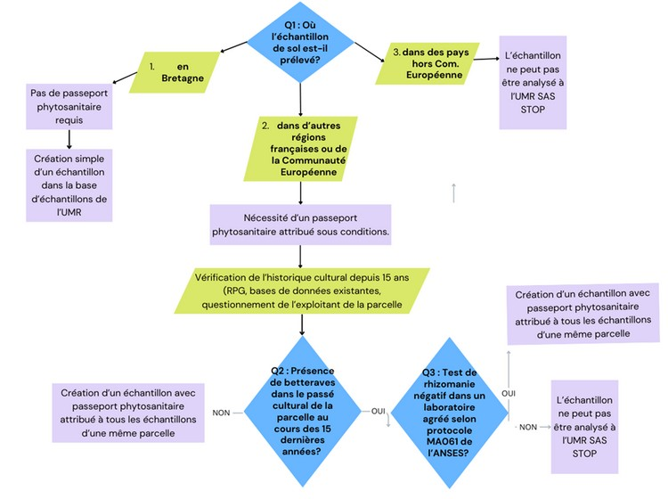

Version 2 du 15 avril 2026
validée par P. Prigent, inspecteur phytosanitaire du SRAL
Par un règlement de la Commission Européenne en date du 28 novembre 2019 (règlement UE 2019/2072), la région Bretagne est reconnue comme une zone protégé
(ZP) vis-à-vis du virus de la rhizomanie : c’est la seule région de France à avoir ce statut de zone protégée^1 et la réception en Bretagne d’échantillons de sol prélevés en dehors de la région, est soumis à des obligations réglementaires spécifiques que l’UMR SAS se doit de respecter.
Le statut de zone protégée implique que la mise en circulation de sol vers la Bretagne nécessite un passeport phytosanitaire zone protégée (PPZP) attestant de la conformité à la réglementation : il faut ainsi pouvoir prouver que la parcelle naturelle ou cultivée qui est échantillonnée n’a pas connu une culture de betterave, git plante hôte du virus, depuis au moins 15 ans.
Cette fiche synthétique a pour objectif de récapituler l’ensemble des procédures qu’il faut respecter pour pouvoir importer dans les locaux de l’UMR SAS situés en Bretagne des échantillons de sol prélevés dans une zone non protégée située en France ou dans un pays de la communauté européenne.
Tout agent de l’UMR envisageant d’importer des échantillons de sol prélevés hors de Bretagne, doit dès le départ du projet répondre aux questions du logigramme de la figure 1 et détaillées ci-dessous :

Trois cas de figure se présentent :
Figure 1 : Logigramme pour la réception d’échantillons de sols dans les locaux de l’UMR SAS en Bretagne
Pour qu’une parcelle située hors Bretagne puisse recevoir un passeport phytosanitaire, il faut documenter le fait que cette parcelle n’a pas reçu de betteraves sucrières ou fourragères au cours des 15 dernières années.
Dès la première phase du projet, il est donc indispensable d’établir l’historique cultural de la parcelle au cours des 15 dernières années. Les étapes pour le faire sont les suivantes :
L’API RPG disponible sur le serveur GEOSAS de l' UMR permet d’interroger le Référentiel Parcellaire Graphique et d’identifier un groupe de cultures par îlot de parcelles pour les années avant 2015 et une culture par parcelle après 2015. Les cultures des deux dernières années ne sont par contre pas renseignées du fait des délais de mise en ligne des informations.
Plusieurs situations peuvent se rencontrer :
a) Une culture de betterave est présente après 2015 : en l’état, la parcelle ne peut recevoir de passeport phytosanitaire et aucun échantillon de sol provenant de cette parcelle ne peut être réceptionné en Bretagne : se rendre alors à la question 3 du logigramme. b) Il n’y a pas de betteraves après 2015 et aucun groupe de cultures pouvant inclure des betteraves n’est identifié avant 2015 : il faut alors interroger l’exploitant de la parcelle sur les cultures en place pour les années récentes non renseignées dans le RPG, pour qu’il certifie de l’absence de betteraves également sur ces années-là. c) Il n’y a pas de betteraves après 2015, mais un groupe de cultures pouvant inclure des betteraves est identifié avant 2015 : il faut alors interroger l’exploitant de la parcelle sur les cultures en place pour les années avant 2015 et les années récentes non renseignées dans le RPG, pour qu’il certifie de l’absence de betteraves au cours des 15 dernières années.
Philippe Prigent, inspecteur phytosanitaire du Service Régional de l’Alimentation (SRAL) de la DRAAF-Bretagne , a confirmé le 3 mars 2026 la possibilité de réaliser un test homologué de rhizomanie, pour permettre si le résultat est négatif, l’attribution d’un passeport phytosanitaire sur une parcelle avec un passé de betteraves.
Les conditions devant être vérifiées par "constatation officielle", les prélèvements et analyses doivent être réalisés par une autorité compétente (ou son délégataire) ou par l'opérateur professionnel autorisé à délivrer les passeports phytosanitaires (ce qui correspond à un opérateur professionnel "sous supervision de l'autorité compétente"). Le SRAL a autorisé l’UMR SAS à délivrer des passeports phytosanitaires et à ce titre nous autorise également à effectuer nous-mêmes les prélèvements de sol permettant de faire ce test. Pour cela :
Aucun passeport phytosanitaire ne peut être délivré sans confirmation d’un résultat négatif du test biologique et les échantillons de sol de la parcelle d’intérêt ne peuvent donc entrer en Bretagne avant réception des résultats transmis par le laboratoire Eurofins.
Le Service Régional de l’Alimentation de la DRAAF Bretagne a attribué à l’UMR SAS le numéro d’immatriculation BR13551 lui permettant d’éditer des passeports phytosanitaires pour des parcelles autorisées.
Pour cela, l’UMR s’engage à respecter cinq conditions :
Quand les conditions permettant de délivrer un passeport phytosanitaire sont remplies, la création d’un passeport par parcelle peut se faire à travers
l’outil développé par Mario Adam de l’UMR SAS.
Cet outil a été développé en premier lieu pour assurer la traçabilité de tout échantillon entrant dans les locaux de l’UMR SAS et ce, quelle que soit son origine géographique : cela se traduit par la création d’une étiquette d’identification de chaque échantillon (Figure 2a) où figure un numéro unique d’échantillon permettant son identification tout au long de son parcours d’analyse en lien avec les bases de données qui le caractérisent. Cette traçabilité inclue la phase de stockage de l’échantillon avant sa destruction finale, dans un lieu qui devra être clairement identifié (et le cas échéant actualisé dans la base) pour permettre à l’inspecteur de retrouver un échantillon lors de son contrôle annuel.
Cet outil permet également dans le cas d’échantillons de sol prélevés hors de Bretagne de créer, si les conditions sont réunies, de créer un passeport phytosanitaire par parcelle qui se matérialise par l’impression d’une seconde étiquette (Figure 2b) répondant aux exigences réglementaires et devant être accolée sur tous les contenants de cet échantillon au cours de son cycle d’analyse. Plusieurs échantillons prélevés dans une même parcelle auront donc la même étiquette de passeport phytosanitaire.
Figure 2 - Exemple des deux étiquettes fournies pour un échantillon de sol prélevé hors de Bretagne : (A) Etiquette d’identification de l’échantillon ; (B) Etiquette du passeport phytosanitaire de la parcelle d’origine de l’échantillon.
Tout échantillon de sol prélevé hors de Bretagne doit être identifié par son étiquette de passeport phytosanitaire tout au long de son cycle de vie au sein de l’UMR SAS, depuis son prélèvement initial jusqu’à sa destruction finale, en passant par toutes les étapes intermédiaires d’analyse et de stockage. Lors de l’inspection annuelle, l’inspecteur du SRAL pourra sélectionner un échantillon quelconque et vérifier sa bonne traçabilité, notamment ses lieux et dates de prélèvement, tout en vérifiant que les conditions de délivrance d’un passeport phytosanitaire étaient bien remplies.
La destruction finale d’un échantillon sous passeport phytosanitaire doit nécessairement se faire via un circuit agréé de destruction, en mobilisant les contrats d’évacuation de l’INRAE ou de l’Institut Agro :
(^8) Contact : Anne Lemoine, Conseillère Prévention de Centre Adjointe, voir : https://rennes.intranet.inrae.fr/appui-a-la-recherche/prevention/environnement/dechets/filieres-dechets/dasri (^9) Contact : Eric Mortreau, Responsable Service Santé Sécurité au Travail, eric.mortreau@institut-agro.fr